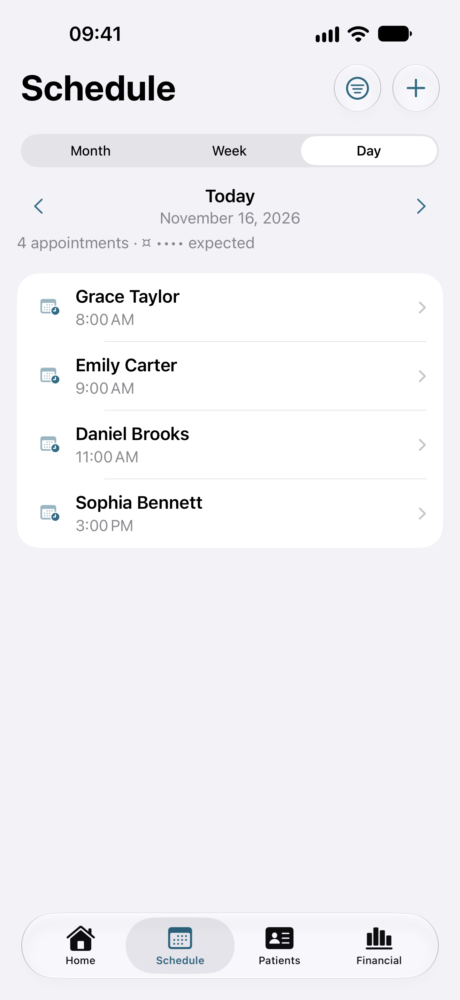
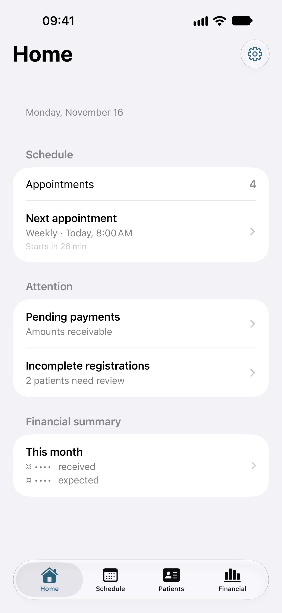
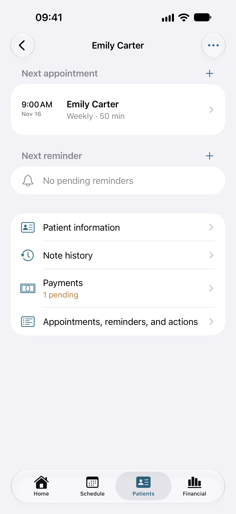
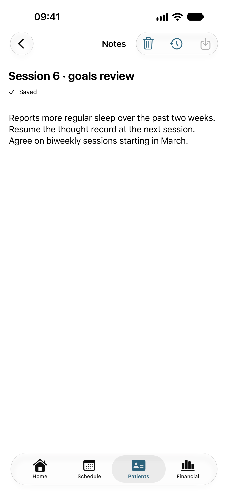
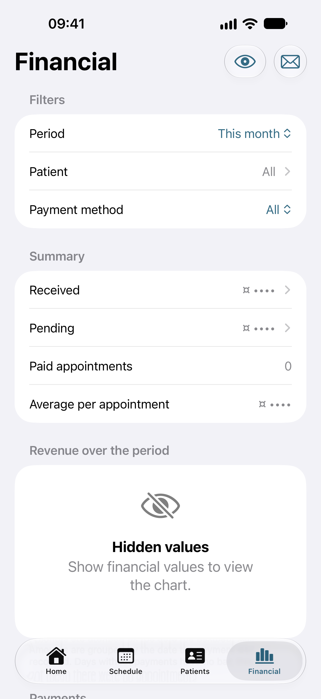

A schedule built for recurring sessions
- Day, week and month views.
- Weekly, biweekly or monthly sessions, or series with no end date.
- Calendar and reminders without patient names, unless you allow them.

Schedule, patients, clinical notes and payments in one app. Your data stays on your device, and iCloud is optional.

Four areas that follow every appointment, from booking to payment.




Works with Siri, Shortcuts, Calendar and iCloud.
25 seconds, with fictional data.
The features shown require a subscription.
Your routine, in one place. See your schedule clearly. Find each patient. Keep their context close. Stay on top of payments. The demonstrated features require a subscription. The recording uses fictional data.
Everything stays on your device by default. To use it on iPhone and Mac, turn on iCloud: data goes to the private area of your Apple account, and the PsiControle team can't read it.
Creating and editing records requires a trial period or a subscription bought through the App Store. When a free trial is available, its length is shown before you buy. If access ends, the app may keep your data available to view and export.
On your device. Nothing is sent to PsiControle servers. If you turn on iCloud, the data is also stored in the private area of your Apple account, which the team can't read.
Yes. Turn on iCloud with the same Apple Account on both devices to see your schedule, patients, notes and payments on each.
Yes. You keep using your data on the device. With iCloud on, changes are sent when you're back online.
Yes, with a CSV file. It's read on your device and brings in name, contact details, record status, document and address.
No, unless you allow it. By default, events and notifications use neutral text, without names, phone numbers or notes.